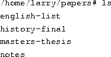
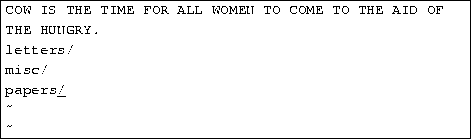

If you're new to UNIX and Linux, you may be a bit intimidated by the size and apparent complexity of the system before you. This chapter does not go into great detail or cover advanced topics. Instead, we want you to hit the ground running.
We assume very little here about your background, except perhaps that you have some familiarity with personal computer systems, and MS-DOS. However, even if you're not an MS-DOS user, you should be able to understand everything here. At first glance, Linux looks a lot like MS-DOS--after all, parts of MS-DOS were modeled on the CP/M operating system, which in turn was modeled on UNIX. However, only the most superficial features of Linux resemble MS-DOS. Even if you're completely new to the PC world, this tutorial should help.
And, before we begin: Don't be afraid to experiment. The system won't bite you. You can't destroy anything by working on the system. Linux has built-in security features to prevent ``normal'' users from damaging files that are essential to the system. Even so, the worst thing that can happen is that you may delete some or all of your files and you'll have to re-install the system. So, at this point, you have nothing to lose.
Linux is a multitasking, multiuser operating system, which means that many people can run many different applications on one computer at the same time. This differs from MS-DOS, where only one person can use the system at any one time. Under Linux, to identify yourself to the system, you must log in, which entails entering your login name (the name the system uses to identify you), and entering your password, which is your personal key for logging in to your account. Because only you know your password, no one else can log in to the system under your user name.
On traditional UNIX systems, the system administrator assigns you a user name and an initial password when you are given an account on the system. However, because in Linux tt you are the system administrator, you must set up your own account before you can log in. For the following discussions, we'll use the imaginary user name, ``larry.''
In addition, each system has a host name assigned to it. It is this host name that gives your machine a name, gives it character and charm. The host name is used to identify individual machines on a network, but even if your machine isn't networked, it should have a host name. For our examples below, the system's host name is ``mousehouse''.
Before you can use a newly installed Linux system, you must set up a user account for yourself. It's usually not a good idea to use the root account for normal use; you should reserve the root account for running privileged commands and for maintaining the system as discussed below.
In order to create an account for yourself, log in as root and use the useradd or adduser command. See Section 4.6 for information on this procedure.
At login time, you'll see a prompt resembling the following:
Enter your user name and press the Enter key. Our hero, larry, would type:
Next, enter your password. The characters you enter won't be echoed to the screen,
so type carefully. If you mistype your password, you'll see
the message
and you'll have to try again.
Once you have correctly entered the user name and password, you are officially logged in to the system, and are free to roam.
The system's console is the monitor and keyboard connected directly to the system. (Because Linux is a multiuser operating system, you may have other terminals connected to serial ports on your system, but these would not be the console.) Linux, like some other versions of UNIX, provides access to virtual consoles (or VCs), that let you have more than one login session on the console at one time.
To demonstrate this, log in to your system. Next, press Alt-F2. You should see the login: prompt again. You're looking at the second virtual console. To switch back to the first VC, press Alt-F1. Voila! You're back to your first login session.
A newly-installed Linux system probably lets you to access only the first half-dozen or so VCs, by pressing Alt-F1 through Alt-F4, or however many VCs are configured on your system. It is possible to enable up to 12 VCs--one for each function key on your keyboard. As you can see, use of VCs can be very powerful because you can work in several different sessions at the same time.
While the use of VCs is somewhat limiting (after all, you can look at only one VC at a time), it should give you a feel for the multiuser capabilities of Linux. While you're working on the first VC, you can switch over to the second VC and work on something else.
For most of your explorations in the world of Linux, you'll be talking to the system through a shell, a program that takes the commands you type and translates them into instructions to the operating system. This can be compared to the COMMAND.COM program under MS-DOS, which does essentially the same thing. A shell is just one interface to Linux. There are many possible interfaces--like the X Window System, which lets you run commands by using the mouse and keyboard.
As soon as you log in, the system starts the shell, and you can begin entering
commands. Here's a quick example. Larry logs in and is
waiting at the shell prompt.
The last line of this text is the shell's prompt, indicating that it's
ready to take commands. (More on what the prompt itself means later.)
Let's try telling the system to do something interesting:
Well, as it turns out, make is the name of an actual program on the system, and the shell executed this program when given the command. (Unfortunately, the system was being unfriendly.)
This brings us to the burning question: What is a command? What
happens when you type ``make love''? The first word on the command
line, ``make'', is the name of the command to be executed. Everything
else on the command line is taken as arguments to this command. Example:
The name of this command is ``cp'', and the arguments are
``foo'' and ``bar''.
When you enter a command, the shell does several things. First, it checks the command to see if it is internal to the shell. (That is, a command which the shell knows how to execute itself. There are a number of these commands, and we'll go into them later.) The shell also checks to see if the command is an alias, or substitute name, for another command. If neither of these conditions apply, the shell looks for a program, on disk, having the specified name. If successful, the shell runs the program, sending the arguments specified on the command line.
In our example, the shell looks for a program called make, and runs it with the argument love. Make is a program often used to compile large programs, and takes as arguments the name of a ``target'' to compile. In the case of ``make love'', we instructed make to compile the target love. Because make can't find a target by this name, it fails with a humorous error message, and returns us to the shell prompt.
What happens if we type a command to a shell and the shell can't
find a program having the specified name? Well, we can try the following:
Quite simply, if the shell can't find a program having the name given
on the command line (here, ``eat''), it prints an error message.
You'll often see this error message
if you mistype a command (for example, if you had typed ``mkae love''
instead of ``make love'').
Before we delve much further, we should tell you how to log out of the
system. At the shell prompt, use the command
to log out. There are other ways of logging out, but this
is the most foolproof one.
You should also know how to change your password. The command
passwd prompts you for your old password, and a new password.
It also asks you to reenter the new password for validation. Be careful
not to forget your password--if you do, you will have to ask the
system administrator to reset it for you. (If you are the system
administrator, see page  .)
.)
Under most operating systems (including Linux), there is the concept of a file, which is just a bundle of information given a name (called a filename). Examples of files might be your history term paper, an e-mail message, or an actual program that can be executed. Essentially, anything saved on disk is saved in an individual file.
Files are identified by their file names. For example, the file containing your history paper might be saved with the file name history-paper. These names usually identify the file and its contents in some form that is meaningful to you. There is no standard format for file names as there is under MS-DOS and some other operating systems; in general, a file name can contain any character (except the / character--see the discussion of path names, below) and is limited to 256 characters in length.
With the concept of files comes the concept of directories. A directory is a collection of files. It can be thought of as a ``folder'' that contains many different files. Directories are given names, with which you can identify them. Furthermore, directories are maintained in a tree-like structure; that is, directories may contain other directories.
Consequently, you can refer to a file by its path name, which is
made up of the filename, preceded by the name of the directory
containing the file. For example, let's say that Larry has a
directory called papers, which contains three files:
history-final, english-lit, and masters-thesis. Each of
these three files contains information for three of Larry's ongoing
projects. To refer to the english-lit file, Larry can specify
the file's pathname, as in:
As you can see, the directory and filename are separated by a single
slash (/). For this reason, filenames themselves cannot contain the
/ character. MS-DOS users will find this convention familiar,
although in the MS-DOS world the backslash (\) is used instead.
As mentioned, directories can be nested within each other as well. For
example, let's say that there is another directory within
papers, called notes. The notes directory contains the
files math-notes and cheat-sheet. The pathname of the file
cheat-sheet would be
Therefore, a path name is really like a path to the file. The directory that contains a given subdirectory is known as the parent directory. Here, the directory papers is the parent of the notes directory.
Most Linux systems use a standard layout for files so that system resources and programs can be easily located. This layout forms a directory tree, which starts at the ``/'' directory, also known as the ``root directory''. Directly underneath / are important subdirectories: /bin, /etc, /dev, and /usr, among others. These directories in turn contain other directories which contain system configuration files, programs, and so on.
In particular, each user has a home directory, which is the directory set aside for that user to store his or her files. In the examples above, all of Larry's files (like cheat-sheet and history-final) are contained in Larry's home directory. Usually, user home directories are contained under /home, and are named for the user owning that directory. Larry's home directory is /home/larry.
The diagram on page shows a sample directory tree,
which should give you an idea of how the directory tree on your system
is organized.
=1.0pt

Figure 3.1: A typical (abridged) Linux directory tree.
At any moment, commands that you enter are assumed to be relative to your current working directory. You can think of your working directory as the directory in which you are currently ``located''. When you first log in, your working directory is set to your home directory--/home/larry, in our case. Whenever you refer to a file, you may refer to it in relationship to your current working directory, rather than specifying the full pathname of the file.
Here's an example. Larry has the directory papers, and
papers contains the file
history-final. If Larry wants to look at this file, he can use
the command
The more command simply displays a file, one screen at a time.
However, because Larry's current working directory is /home/larry,
he can instead refer to the file relative to his current
location by using the command

If you begin a filename (like papers/final) with a character
other than /, you're referring to the file in terms relative to
your current working directory. This is known as a relative
path name.
On the other hand, if you begin a file name with a /, the system interprets this as a full path name--that is, a path name that includes the entire path to the file, starting from the root directory, /. This is known as an absolute path name.
Under both tcsh and bash you can specify your home directory with
the tilde character (~). For example, the command
you can specify your home directory with
the tilde character (~). For example, the command
is equivalent to
The shell replaces the ~ character with the name of your
home directory.
You can also specify other user's home directories with the tilde character. The pathname ~karl/letters translates to /home/karl/letters by the shell (if /home/karl is karl's home directory). Using a tilde is simply a shortcut; there is no directory named ~--it's just syntactic sugar provided by the shell.
Before we begin, it is important to know that all file and command names on a Linux system are case-sensitive (unlike operating systems such as MS-DOS). For example, the command make is very different from Make or MAKE. The same is true for file and directory names.
Now that you can log in, and you know how to refer to files using pathnames, how can you change your current working directory, to make life easier?
The command for moving around in the directory structure is
cd, which is short for ``change directory''.
Many often-used Linux commands are two or three letters.
The usage of the cd command is
where directory is the name of the directory which you wish
to become the current working directory.
As mentioned earlier, when you log in, you begin in your home directory. If
Larry wanted to switch to the papers subdirectory, he'd
use the command
As you can see, Larry's prompt changes to reflect his current working
directory (so he knows where he is). Now that he's in the papers
directory, he can look at his history final with the command
Now, Larry is stuck in the papers subdirectory. To move back
up to the next higher (or parent) directory, use the command
(Note the space between the ``cd'' and the ``..''.)
Every directory has an entry named ``..'' which refers to
the parent directory. Similarly, every directory has an entry
named ``.'' which refers to itself. Therefore, the command
gets us nowhere.
You can also use absolute pathnames with the cd command.
To cd into Karl's home directory, we can use the command
Also, using cd with no argument will return you to your own
home directory.
Now that you know how to move around directories, you might think, ``So what?'' Moving around directories is fairly useless by itself, so let's introduce a new command, ls. The ls command displays a listing of files and directories, by default from your current directory. For example:
Here we can see that Larry has three entries in his current directory: Mail, letters, and papers. This doesn't tell us much--are these directories or files? We can use the -F option of the ls command to get more detailed information.
From the / appended to each filename, we know that these three
entries are in fact subdirectories.
Using ls -F may also append ``*'' to the end of a filename in the resulting list which would indicate that the file is an executable, or a program which can be run. If nothing is appended to the filename using ls -F, the file is a ``plain old file'', that is, it's neither a directory nor an executable.
In general, each UNIX command may take a number of options in addition to other arguments. These options usually begin with a ``-'', as demonstrated above with the -F option. The -F option tells ls to give more information about the type of the files involved--in this case, printing a / after each directory name.
If you give ls a directory name, the system will print the contents of
that directory.
Or, for a more interesting listing, let's see what's in the system's /etc directory.
If you're a MS-DOS user, you may notice that the filenames can be longer than 8 characters, and can contain periods in any position. You can even use more than one period in a filename.
Let's move to the top of the directory tree, and then down to another directory with the commands
You can also move into directories in one step, as in cd /usr/bin.
Try moving around various directories, using ls and cd.
In some cases, you may run into the foreboding ``Permission denied''
error message. This is simply UNIX security kicking in:
in order to use the ls or cd commands, you must have
permission to do so. We talk more about this starting on
page .
It's time to learn how to create directories. This involves the use of the mkdir command. Try the following:
Congratulations! You made a new directory and moved into it. Since there aren't any files in this new directory, let's learn how to copy files from one place to another.
To copy files, use the command cp, as shown here:
The cp command copies the files listed on the command line to the file or directory given as the last argument. Notice that we use ``.'' to refer to the current directory.
The mv command moves files, rather than copying them. The syntax is very straightforward:
Notice that the termcap file has been renamed sells. You can also use the mv command to move a file to a completely new directory.
Note: mv and cp will overwrite a destination file having the same name without asking you. Be careful when you move a file into another directory. There may already be a file having the same name in that directory, which you'll overwrite!
You now have an ugly rhyme developing with the use of the ls command. To delete a file, use the rm command, which stands for ``remove'', as shown here:
We're left with nothing but shells, but we won't complain. Note that rm by default won't prompt you before deleting a file--so be careful.
A related command to rm is rmdir. This command deletes a directory, but only if the directory is empty. If the directory contains any files or subdirectories, rmdir will complain.
The commands more and cat are used for viewing the contents of files. more displays a file, one screenful at a time, while cat displays the whole file at once.
To look at the file shells, use the command
In case you're interested what shells contains, it's a list of valid shell programs on your system. On most systems, this includes /bin/sh, /bin/bash, and /bin/csh. We'll talk about these different types of shells later.
While using more, press Space to display the next page of text, and b to display the previous page. There are other commands available in more as well, these are just the basics. Pressing q will quit more.
Quit more and try cat /etc/termcap. The text will probably fly by too quickly for you to read it all. The name ``cat'' actually stands for ``concatenate'', which is the real use of the program. The cat command can be used to concatenate the contents of several files and save the result to another file. This will be again in section 3.14.1.
Almost every UNIX system, including Linux, provides a facility known as manual pages. These manual pages contain online documentation for system commands, resources, configuration files and so on.
The command used to access manual pages is man. If you're
interested in learning about other options of the ls command,
you can type
and the manual page for ls will be displayed.
Unfortunately, most manual pages are written for those who already have some idea of what the command or resource does. For this reason, manual pages usually contain only the technical details of the command, without much explanation. However, manual pages can be an invaluable resource for jogging your memory if you forget the syntax of a command. Manual pages will also tell you about commands that we don't cover in this book.
I suggest that you try man for the commands that we've already
gone over and whenever I introduce a new command. Some of these
commands won't have manual pages, for several reasons. First, the
manual pages may not have been written yet. (The Linux Documentation
Project is responsible for manual pages under Linux as well. We are
gradually accumulating most of the manual pages available for the
system.) Second, the the command might be an internal shell command,
or an alias (discussed on page ), which would
not have a manual page of its own. One example is cd, which is
an internal shell command. The shell itself actually processes the
cd--there is no separate program that implements this command.
If, for some twisted and bizarre reason, you want to access files from MS-DOS, it's easily done under Linux.
The usual way to access MS-DOS files is to mount an MS-DOS partition or
floppy under Linux, allowing you to access the files directly through the
file system. For example, if you have an MS-DOS floppy in
/dev/fd0, the command
will mount it under /mnt. See Section 4.8.4 for more
information on mounting floppies.
You can also mount an MS-DOS partition of your hard drive for access
under Linux. If you have an MS-DOS partition on /dev/hda1, the
command
mounts it. Be sure to umount the partition when you're done
using it. You can have a MS-DOS partition automatically mounted at
boot time if you include the entry in /etc/fstab. See
Section 4.4 for details. The following line in
/etc/fstab will mount an MS-DOS partition on /dev/hda1 on the
directory /dos.
You can also mount the VFAT file systems that are used by Windows 95:
This allows access to the long filenames of Windows 95. This only
applies to partitions that actually have the long filenames
stored. You can't mount a normal FAT16 file system and use this to get
long filenames.
The Mtools software may also be used to access MS-DOS files. The commands mcd, mdir, and mcopy all behave like their MS-DOS counterparts. If you install Mtools, there should be manual pages available for these commands.
Accessing MS-DOS files is one thing; running MS-DOS programs is another. There is an MS-DOS Emulator under development for Linux; it is widely available, and included in most distributions. It can also be retrieved from a number of locations, including the various Linux FTP sites listed in Appendix B. The MS-DOS Emulator is reportedly powerful enough to run a number of applications, including WordPerfect, from Linux. However, Linux and MS-DOS are vastly different operating systems. The power of any MS-DOS emulator under UNIX is limited. In addition, a Microsoft Windows emulator that runs under X Windows is under development.
This section introduces some of the most useful basic commands of a UNIX system, including those that are covered in the previous section.
Note that options usually begin with ``-'', and in most cases you can specify more than one option with a single ``-''. For example, rather than use the command ls -l -F, you can use ls -lF.
Rather than listing every option for each command, we only present useful or important commands at this time. In fact, most of these commands have many options that you'll never use. You can use man to see the manual pages for each command, which list all of the available options.
Also note that many of these commands take as arguments a list of files or directories, denoted in this table by ``file1 ...fileN''. For example, the cp command takes as arguments a list of files to copy, followed by the destination file or directory. When copying more than one file, the destination must be a directory.
A file system is the collection of files and the hierarchy of directories on a system. The time has now come to escort you around the file system.
You now have the skills and the knowledge to understand the Linux file
system, and you have a roadmap. (Refer to diagram on
page ).
First, change to the root directory (cd /), and then enter
ls -F to display a listing of its contents. You'll probably see the
following directories:
bin, dev, etc, home, install, lib,
mnt, proc, root, tmp, user, usr,
and var.
Now, let's take a look at each of these directories.
The various directories described above are essential for the system to operate, but most of the items found in /usr are optional. However, it is these optional items that make the system useful and interesting. Without /usr, you'd have a boring system that supports only programs like cp and ls. /usr contains most of the larger software packages and the configuration files that accompany them.
As mentioned before, Linux is a multitasking, multiuser operating system. Multitasking is very useful, and once you understand it, you'll use it all of the time. Before long, you'll run programs in the background, switch between tasks, and pipeline programs together to achieve complicated results with a single command.
Many of the features we'll cover in this section are features provided by the shell itself. Be careful not to confuse Linux (the actual operating system) with a shell--a shell is just an interface to the underlying system. The shell provides functionality inaddition to Linux itself.
A shell is not only an interpreter for the interactive commands you
type at the prompt, but also a powerful programming language. It lets
you to write shell scripts, to ``batch'' several shell commands
together in a file. If you know MS-DOS you'll recognize the similarity
to ``batch files''. Shell scripts are a very powerful tool, that will
let you automate and expand your use of Linux. See
page for more information.
There are several types of shells in the Linux world. The two major types are the ``Bourne shell'' and the ``C shell''. The Bourne shell uses a command syntax like the original shell on early UNIX systems, like System III. The name of the Bourne shell on most Linux systems is /bin/sh (where sh stands for ``shell''). The C shell (not to be confused with sea shell) uses a different syntax, somewhat like the programming language C, and on most Linux systems is named /bin/csh.
Under Linux, several variations of these shells are available. The two most commonly used are the Bourne Again Shell, or ``Bash'' ( /bin/bash), and ``Tcsh'' (/bin/tcsh). bash is a form of the Bourne shell that includes many of the advanced features found in the C shell. Because bash supports a superset of the Bourne shell syntax, shell scripts written in the standard Bourne shell should work with bash. If you prefer to use the C shell syntax, Linux supports tcsh, which is an expanded version of the original C shell.
The type of shell you decide to use is mostly a religious issue. Some folks prefer the Bourne shell syntax with the advanced features of bash, and some prefer the more structured C shell syntax. As far as normal commands such as cp and ls are concerned, the shell you use doesn't matter--the syntax is the same. Only when you start to write shell scripts or use advanced features of a shell do the differences between shell types begin to matter.
As we discuss the features of the various shells, we'll note differences between Bourne and C shells. However, for the purposes of this manual most of those differences are minimal. (If you're really curious at this point, read the man pages for bash and tcsh).
A key feature of most Linux shells is the ability to refer to more than one file by name using special characters. These wildcards let you refer to, say, all file names that contain the character `` n''.
The wildcard ``*'' specifies any character or string of characters in a file name. When you use the character ``*'' in a file name, the shell replaces it with all possible substitutions from file names in the directory you're referencing.
Here's a quick example. Suppose that Larry has the files frog,
joe, and stuff in his current directory.
To specify all files containing the letter ``o'' in the filename, use
the command
As you can see, each instance of ``*'' is replaced with
all substitutions that match the wildcard from filenames in the
current directory.
The use of ``*'' by itself simply matches all filenames, because
all characters match the wildcard.
Here are a few more examples:
The process of changing a ``*'' into a series of filenames is called wildcard
expansion and is done by the shell. This is
important: an individual command, such as ls, never sees
the ``*'' in its list of parameters. The shell expands the
wildcard to include all filenames that match. So, the command
is expanded by the shell to
One important note about the ``*'' wildcard: it does not match file names that begin with a single period (``.''). These files are treated as hidden files--while they are not really hidden, they don't show up on normal ls listings and aren't touched by the use of the ``*'' wildcard.
Here's an example. We mentioned earlier that each directory contains two
special entries: ``.'' refers to the current directory,
and ``..'' refers to the parent directory. However, when you use
ls, these two entries don't show up.
If you use the -a switch with ls, however, you can display
filenames that begin with ``.''. Observe:
The listing contains the two special entries, ``.'' and ``
..'', as well as two other ``hidden'' files--.bash_profile
and .bashrc. These two files are startup files used by
bash when larry logs in. They are described starting on
page .
Note that when you use the ``*'' wildcard, none of the filenames
beginning with ``.'' are displayed.
This is a safety feature: if the ``*'' wildcard matched filenames
beginning with ``.'', it would also match the directory names
``.'' and ``..''. This can be dangerous when using certain
commands.
Another wildcard is ``?''. The ``?'' wildcard expands to
only a single character. Thus, ``ls ?'' displays all
one-character filenames. And ``ls termca?'' would display
``termcap'' but not ``termcap.backup''. Here's
another example:
As you can see, wildcards lets you specify many files at one time. In
the command summary that starts on page , we
said that the cp and mv commands actually can copy or move
more than one file at a time. For example,
copies all filenames in /etc beginning with ``s'' to the
directory /home/larry. The format of the cp command is
really
where files lists the filenames to
copy, and destination is the destination file or directory.
mv has an identical syntax.
If you are copying or moving more than one file, the destination must be a directory. You can only copy or move a single file to another file.
Many Linux commands get input from what is called standard input and send their output to standard output (often abbreviated as stdin and stdout). Your shell sets things up so that standard input is your keyboard, and standard output is the screen.
Here's an example using the cat command. Normally, cat reads data
from all of the files specified by the command line, and sends this data
directly to stdout. Therefore, using the command

displays the contents of the file history-final followed by
masters-thesis.
However, if you don't specify a filename, cat reads data from
stdin and sends it back to stdout. Here's an example:
Each line that you type is immediately echoed back by cat. When
reading from standard input, you indicate the input is ``finished'' by
sending an EOT (end-of-text) signal, in general, generated by pressing
Ctrl-D.
Here's another example. The sort command reads lines of
text (again, from stdin, unless you specify one or more filenames)
and sends the sorted output to stdout. Try the following.
Now we can alphabetize our shopping list... isn't Linux useful?
Now, let's say that you want to send the output of sort to a
file, to save our shopping list on disk. The shell lets you
redirect standard output to a filename, by using the ``>''
symbol. Here's how it works:
As you can see, the result of the sort command isn't
displayed, but is saved to the file named shopping-list.
Let's look at this file:
Now you can sort your shopping list, and save it, too!
But let's suppose that you are storing the unsorted, original shopping
list in the file items. One way of sorting the information
and saving it to a file would be to give sort the name of the
file to read, in lieu of standard input, and redirect standard output
as we did above, as follows:
However, there's another way to do this. Not only can you
redirect standard output, you can redirect standard input
as well, using the ``<'' symbol.
Technically, sort < items is equivalent to sort items, but
lets you demonstrate the following point: sort < items
behaves as if the data in the file items was typed to
standard input. The shell handles the redirection. sort wasn't given
the name of the file (items) to read; as far as sort is
concerned, it still reads from standard input as if you had typed
the data from your keyboard.
This introduces the concept of a filter. A filter is a program that reads data from standard input, processes it in some way, and sends the processed data to standard output. Using redirection, standard input and standard output can be referenced from files. As mentioned above, stdin and stdout default to the keyboard and screen respectively. sort is a simple filter. It sorts the incoming data and sends the result to standard output. cat is even simpler. It doesn't do anything with the incoming data, it simply outputs whatever is given to it.
We already demonstrated how to use sort as a filter. However, these examples assume that you have data stored in a file somewhere or are willing to type the data from the standard input yourself. What if the data that you wanted to sort came from the output of another command, like ls?
The -r option to sort sorts the data in
reverse-alphabetical order. If you want to list the files in your
current directory in reverse order, one way to do it is
follows:

Now redirect the output of the ls command into a file called
file-list:
Here, you save the output of ls in a file, and then run
sort -r on that file. But this is unwieldy and
uses a temporary file to save the data from ls.
The solution is pipelining. This is a shell feature that
connects a string of commands via a ``pipe.'' The stdout of the
first command is sent to the stdin of the second command. In
this case, we want to send the stdout of ls to the
stdin of sort. Use the ``|'' symbol to create a pipe, as
follows:
This command is shorter and easier to type.
Here's another useful example, the command
displays a long list of files, most of which fly
past the screen too quickly for you to read. So, let's use
more to display the list of files in /usr/bin.
Now you can page down the list of files at your leisure.
But the fun doesn't stop here! You can pipe more than two commands together.
The command head is a filter that displays the first lines from
an input stream (in this case, input from a pipe). If you want to display
the last filename in alphabetical order in the current directory,
use commands like the following:
where head -1 displays the first line of input that it
receives (in this case, the stream of reverse-sorted data from ls).
Using ``>'' to redirect output to a file is destructive: in other
words, the command
overwrites the contents of the file file-list. If instead, you
redirect with the symbol ``>>'', the output is appended to
(added to the end of) the named file instead of overwriting it. For
example,
appends the output of the ls command to file-list.
Keep in mind that redirection and pipes are features of the shell--which supports the use of ``>'', ``>>'' and `` |''. It has nothing to do with the commands themselves.
Because there is typically more than one user on a Linux system, Linux provides a mechanism known as file permissions, which protect user files from tampering by other users. This mechanism lets files and directories be ``owned'' by a particular user. For example, because Larry created the files in his home directory, Larry owns those files and has access to them.
Linux also lets files be shared between users and groups of users. If Larry desired, he could cut off access to his files so that no other user could access them. However, on most systems the default is to allow other users to read your files but not modify or delete them in any way.
Every file is owned by a particular user. However, files are also owned by a particular group, which is a defined group of users of the system. Every user is placed into at least one group when that user's account is created. However, the system administrator may grant the user access to more than one group.
Groups are usually defined by the type of users who access the machine. For example, on a university Linux system users may be placed into the groups student, staff, faculty or guest. There are also a few system-defined groups (like bin and admin) which are used by the system itself to control access to resources--very rarely do actual users belong to these system groups.
Permissions fall into three main divisions: read, write, and execute. These permissions may be granted to three classes of users: the owner of the file, the group to which the file belongs, and to all users, regardless of group.
Read permission lets a user read the contents of the file, or in the case of directories, list the contents of the directory (using ls). Write permission lets the user write to and modify the file. For directories, write permission lets the user create new files or delete files within that directory. Finally, execute permission lets the user run the file as a program or shell script (if the file is a program or shell script). For directories, having execute permission lets the user cd into the directory in question.
Let's look at an example that demonstrates file permissions. Using the
ls command with the -l option displays a ``long''
listing of the file, including file permissions.
The first field in the listing represents the file permissions. The third field is the owner of the file (larry) and the fourth field is the group to which the file belongs (users). Obviously, the last field is the name of the file (stuff). We'll cover the other fields later.
This file is owned by larry, and belongs to the group users. The string -rw-r-r- lists, in order, the permissions granted to the file's owner, the file's group, and everybody else.
The first character of the permissions string (``-'') represents the type of file. A ``-'' means that this is a regular file (as opposed to a directory or device driver). The next three characters (``rw-'') represent the permissions granted to the file's owner, larry. The ``r'' stands for ``read'' and the ``w'' stands for ``write''. Thus, larry has read and write permission to the file stuff.
As mentioned, besides read and write permission, there is also ``execute'' permission--represented by an ``x''. However, a ``-'' is listed here in place of an ``x'', so Larry doesn't have execute permission on this file. This is fine, as the file stuff isn't a program of any kind. Of course, because Larry owns the file, he may grant himself execute permission for the file if he so desires. (This will be covered shortly.)
The next three characters, (``r-''), represent the group's permissions on the file. The group that owns this file is users. Because only an ``r'' appears here, any user who belongs to the group users may read this file.
The last three characters, also (``r-''), represent the permissions granted to every other user on the system (other than the owner of the file and those in the group users). Again, because only an ``r'' is present, other users may read the file, but not write to it or execute it.
Here are some other examples of permissions:
The permissions granted to a file also depend on the permissions of the directory in which the file is located. For example, even if a file is set to -rwxrwxrwx, other users cannot access the file unless they have read and execute access to the directory in which the file is located. For example, if Larry wanted to restrict access to all of his files, he could set the permissions to his home directory /home/larry to -rwx---. In this way, no other user has access to his directory, and all files and directories within it. Larry doesn't need to worry about the individual permissions on each of his files.
In other words, to access a file at all, you must have execute access to all directories along the file's pathname, and read (or execute) access to the file itself.
Typically, users on a Linux system are very open with their files. The usual set of permissions given to files is -rw-r-r-, which lets other users read the file but not change it in any way. The usual set of permissions given to directories is -rwxr-xr-x, which lets other users look through your directories, but not create or delete files within them.
However, many users wish to keep other users out of their files. Setting the permissions of a file to -rw---- will prevent any other user from accessing the file. Likewise, setting the permissions of a directory to -rwx--- keeps other users out of the directory in question.
The command chmod is used to set the permissions on a file. Only
the owner of a file may change the permissions on that file.
The syntax of chmod is
Briefly, you supply one or more of all, user, group, or other. Then you specify whether you are adding rights (+) or taking them away (-). Finally, you specify one or more of read, write, and execute. Some examples of legal commands are:
Links let you give a single file more than one name. Files are actually identified by the system by their inode number, which is just the unique file system identifier for the file. A directory is actually a listing of inode numbers with their corresponding filenames. Each filename in a directory is a link to a particular inode.
The ln command is used to create multiple links for one
file. For example, let's say that you have a file called foo in
a directory. Using ls -i, you can look at the inode number
for this file.
Here, foo has an inode number of 22192 in the
file system. You can create another link to foo, named bar, as follows:
With ls -i, you see that the two files have the same inode.
Now, specifying either foo or bar will access
the same file. If you make changes to foo, those changes
appear in bar as well. For all purposes, foo
and bar are the same file.
These links are known as hard links because they create a direct link to an inode. Note that you can hard-link files only when they're on the same file system; symbolic links (see below) don't have this restriction.
When you delete a file with rm, you are actually only
deleting one link to a file. If you use the command
then only the link named foo is deleted, bar
will still exist. A file is only truly deleted on the system
when it has no links to it. Usually, files have only one
link, so using the rm command deletes the file. However,
if a file has multiple links to it, using rm will delete only
a single link; in order to delete the file, you must
delete all links to the file.
The command ls -l displays the number of links to a
file (among other information).
The second column in the listing, ``2'', specifies the number of
links to the file.
As it turns out, a directory is actually just a file containing information about link-to-inode associations. Also, every directory contains at least two hard links: ``.'' (a link pointing to itself), and ``..'' (a link pointing to the parent directory). The root directory (/) ``..'' link just points back to /. (In other words, the parent of the root directory is the root directory itself.)
Symbolic links, or symlinks, are another type of link, which are different from hard links. A symbolic link lets you give a file another name, but doesn't link the file by inode.
The command ln -s creates a symbolic link to a file.
For example, if you use the command
you will create a symbolic link named bar that points to the file
foo. If you use ls -i, you'll see that the two
files have different inodes, indeed.
However, using ls -l, we see that the file bar
is a symlink pointing to foo.
The file permissions on a symbolic link are not used (they always appear as rwxrwxrwx). Instead, the permissions on the symbolic link are determined by the permissions on the target of the symbolic link (in our example, the file foo).
Functionally, hard links and symbolic links are similar, but there are differences. For one thing, you can create a symbolic link to a file that doesn't exist; the same is not true for hard links. Symbolic links are processed by the kernel differently than are hard links, which is just a technical difference but sometimes an important one. Symbolic links are helpful because they identify the file they point to; with hard links, there is no easy way to determine which files are linked to the same inode.
Links are used in many places on the Linux system. Symbolic links are
especially important to the shared library images in /lib. See
page for more information.
Job control is a feature provided by many shells (including bash and tcsh) that let you control multiple running commands, or jobs, at once. Before we can delve much further, we need to talk about processes.
Every time you run a program, you start what is called a process.
The command ps displays a list of currently running processes,
as shown here:
The PID listed in the first column is the process ID,
a unique number given to every running process. The last column,
COMMAND, is the name of the running command. Here, we're looking
only
at the processes which Larry himself is currently running. (There are
many other processes running on the system as well--``ps -aux''
lists them all.) These are bash
(Larry's shell), and the ps command itself. As you can see,
bash is running concurrently with the ps command.
bash executed ps when Larry typed the command. After
ps has finished running (after the table of processes is displayed),
control is returned to the bash process, which displays the
prompt, ready for another command.
A running process is also called a job. The terms process and job are interchangeable. However, a process is usually referred to as a ``job'' when used in conjunction with job control--a feature of the shell that lets you switch between several independent jobs.
In most cases users run only a single job at a time--whatever command they last typed to the shell. However, using job control, you can run several jobs at once, and switch between them as needed.
How might this be useful? Let's say you are editing a text file and want to interrupt your editing and do something else. With job control, you can temporarily suspend the editor, go back to the shell prompt and start to work on something else. When you're done, you can switch back to the editor and be back where you started, as if you didn't leave the editor. There are many other practical uses of job control.
Jobs can either be in the foreground or in the background.
There can only be one job in the foreground at a time. The foreground
job is the job with which you interact--it receives input from the
keyboard and sends output to your screen, unless, of course, you have
redirected input or output, as described starting on
page ). On the other hand, jobs in the
background do not receive input from the terminal--in general, they
run along quietly without the need for interaction.
Some jobs take a long time to finish and don't do anything interesting while they are running. Compiling programs is one such job, as is compressing a large file. There's no reason why you should sit around being bored while these jobs complete their tasks; just run them in the background. While jobs run in the background, you are free to run other programs.
Jobs may also be suspended. A suspended job is a job that is temporarily stopped. After you suspend a job, you can tell the job to continue in the foreground or the background as needed. Resuming a suspended job does not change the state of the job in any way--the job continues to run where it left off.
Suspending a job is not equal to interrupting a job. When you
interrupt a running process (by pressing the interrupt key, which is
usually Ctrl-C), the process is killed, for good. Once the job
is killed, there's no hope of resuming it. You'll must run the command
again. Also, some programs trap the interrupt, so that pressing
Ctrl-C won't immediately kill the job. This is to let the
program perform any necessary cleanup operations before exiting. In
fact, some programs don't let you kill them with an interrupt at all.
Let's begin with a simple example. The command yes is a seemingly useless command that sends an endless stream of y's to standard output. (This is actually useful. If you piped the output of yes to another command which asked a series of yes and no questions, the stream of y's would confirm all of the questions.)
Try it out:
The y's will continue ad infinitum. You can kill the
process by pressing the interrupt key, which is usually Ctrl-C.
So that we don't have to put up with the annoying stream of y's,
let's redirect the standard output of yes to /dev/null. As
you may remember, /dev/null acts as a ``black hole'' for data.
Any data sent to it disappears. This is a very effective method of
quieting an otherwise verbose program.
Ah, much better. Nothing is printed, but the shell prompt doesn't
come back. This is because yes is still running, and is sending
those inane y's to /dev/null. Again, to kill the job,
press the interrupt key.
Let's suppose that you want the yes command to continue to run but wanted to get the shell prompt back so that you can work on other things. You can put yes into the background, allowing it to run, without need for interaction.
One way to put a process in the background is to append an ``&''
character to the end of the command.
As you can see, the shell prompt has returned. But what is this
``[1] 164''? And is the yes command really running?
The ``[1]'' represents the job number for the yes
process. The shell assigns a job number to every running job. Because
yes is the one and only job we're running, it
is assigned job number 1. The ``164'' is the process ID, or
PID, number given by the system to the job. You can use either number to
refer to the job, as you'll see later.
You now have the yes process running in the background, continuously
sending a stream of y's to /dev/null. To check on the
status of this process, use the internal shell command jobs.
Sure enough, there it is. You could also use the ps command as
demonstrated above to check on the status of the job.
To terminate the job, use the kill command.
This command takes either a job number or a process ID number as an
argument. This was job number 1, so using the command
kills the job. When identifying the job with the job number, you must
prefix the number with a percent (``%'') character.
Now that you've killed the job, use jobs again to check on it:
The job is in fact dead, and if you use the jobs command again
nothing should be printed.
You can also kill the job using the process ID (PID) number,
displayed along with the job ID when you start the job. In our example,
the process ID is 164, so the command
is equivalent to
You don't need to use the ``%'' when referring to a job by its
process ID.
There is another way to put a job into the background. You can start the job normally (in the foreground), stop the job, and then restart it in the background.
First, start the yes process in the foreground, as you
did before:
Again, because yes is running in the foreground, you shouldn't get
the shell prompt back.
Now, rather than interrupt the job with Ctrl-C, suspend
the job. Suspending a job doesn't kill it: it only temporarily stops
the job until you restart it. To do this, press the suspend key, which
is usually Ctrl-Z.
While the job is suspended, it's simply not running. No CPU time is
used for the job. However, you can restart the job, which causes the
job to run again as if nothing ever happened. It will continue to run
where it left off.
To restart the job in the foreground, use the
fg command (for ``foreground'').
The shell displays the name of the command again so you're aware of which job
you just put into the foreground. Stop the job again with Ctrl-Z.
This time, use the bg command to put the job into the background.
This causes the command to run just as if you started the command
with ``&'' as in the last section.
And you have your prompt back. Jobs should report that yes
is indeed running, and you can kill the job with kill as we
did before.
How can you stop the job again? Using Ctrl-Z won't work, because the job is in the background. The answer is to put the job in the foreground with fg, and then stop it. As it turns out, you can use fg on either stopped jobs or jobs in the background.
There is a big difference between a job in the background and a job that is stopped. A stopped job is not running--it's not using any CPU time, and it's not doing any work (the job still occupies system memory, although it may have been swapped out to disk). A job in the background is running and using memory, as well as completing some task while you do other work.
However, a job in the background may try to display text on
your terminal, which can be annoying if you're trying to work on
something else. For example, if you used the command
without redirecting stdout to /dev/null, a stream of y's
would be displayed on your screen, without any way for you to
interrupt it. (You can't use Ctrl-C to interrupt jobs in the
background.) In order to stop the endless y's, use the fg
command to bring the job to the foreground, and then use Ctrl-C
to kill it.
Another note. The fg and bg commands normally affect
the job that was last stopped (indicated by a
``+'' next to the job number when you use the jobs command).
If you are running multiple jobs at once, you can put jobs in the foreground or
background by giving the job ID as
an argument to fg or bg, as in
(to put job number 2 into the foreground), or
(to put job number 3 into the background). You can't use process ID numbers with
fg or bg.
Furthermore, using the job number alone, as in
is equivalent to
Just remember that using job control is a feature of the shell. The fg, bg and jobs commands are internal to the shell. If for some reason you use a shell that doesn't support job control, don't expect to find these commands available.
In addition, there are some aspects of job control that differ between bash and tcsh. In fact, some shells don't provide job control at all--however, most shells available for Linux do.
A text editor is a program used to edit files that are composed of text: a letter, C program, or a system configuration file. While there are many such editors available for Linux, the only editor that you are guaranteed to find on any UNIX or Linux system is vi-- the ``visual editor.'' vi is not the easiest editor to use, nor is it very self-explanatory. However, because vi is so common in the UNIX/Linux world, and sometimes necessary, it deserves discussion here.
Your choice of an editor is mostly a question of personal taste and style. Many users prefer the baroque, self-explanatory and powerful emacs--an editor with more features than any other single program in the UNIX world. For example, Emacs has its own built-in dialect of the LISP programming language, and has many extensions (one of which is an Eliza-like artificial intelligence program). However, because Emacs and its support files are relatively large, it may not be installed on some systems. vi, on the other hand, is small and powerful but more difficult to use. However, once you know your way around vi, it's actually very easy.
This section presents an introduction to vi--we won't discuss all of its features, only the ones you need to know to get started. You can refer to the man page for vi if you're interested in learning more about this editor's features. Alternatively, you can read the book Learning the vi Editor from O'Reilly and Associates, or the VI Tutorial from Specialized Systems Consultants (SSC) Inc. See Appendix A for information.
While using vi, at any one time you are in one of three modes of operation. These modes are called command mode, insert mode, and last line mode.
When you start up vi, you are in command mode. This mode lets you use commands to edit files or change to other modes. For example, typing ``x'' while in command mode deletes the character underneath the cursor. The arrow keys move the cursor around the file you're editing. Generally, the commands used in command mode are one or two characters long.
You actually insert or edit text within insert mode. When using vi, you'll probably spend most of your time in this mode. You start insert mode by using a command such as ``i'' (for ``insert'') from command mode. While in insert mode, you can insert text into the document at the current cursor location. To end insert mode and return to command mode, press Esc.
Last line mode is a special mode used to give certain extended commands to vi. While typing these commands, they appear on the last line of the screen (hence the name). For example, when you type ``:'' in command mode, you jump into last line mode and can use commands like ``wq'' (to write the file and quit vi), or ``q!'' (to quit vi without saving changes). Last line mode is generally used for vi commands that are longer than one character. In last line mode, you enter a single-line command and press Enter to execute it.
The best way to understand these concepts is to fire up vi and edit a file. The example ``screens'' below show only a few lines of text, as if the screen were only six lines high instead of twenty-four.
The syntax for vi is
where filename is the name of the file to edit.
Start up vi by typing
to edit the file test. You should see something like
The column of ``~'' characters indicates you are at the end of the file. The represents the cursor.
The vi program is now in command mode. Insert text into the file
by pressing i, which places the editor into insert mode, and
begin typing.
Type as many lines as you want (pressing Enter after each). You may correct mistakes with the Backspace key.
To end insert mode and return to command mode, press Esc.
In command mode you can use the arrow keys to move around in the file. (If you have only one line of text, trying to use the up- or down-arrow keys will probably cause vi to beep at you.)
There are several ways to insert text other than the i
command. The a command inserts text beginning after the current
cursor position, instead of at the current cursor position. For
example, use the left arrow key to move the cursor between the words
``good'' and ``men.''
Press a to start insert mode, type ``wo'', and then press
Esc to return to command mode.
To begin inserting text at the next line, use the o
command. Press o and enter another line or two:
From command mode, the x command deletes the character under the
cursor. If you press x five times, you'll end up with:
Now press a and insert some text, followed by esc:
You can delete entire lines using the command dd (that is,
press d twice in a row). If the cursor is on the second line
and you type dd, you'll see:
To delete the word that the cursor is on, use the dw command.
Place the cursor on the word ``good'', and type dw.
You can replace sections of text using the R command. Place the
cursor on the first letter in ``party'', press R, and type the
word ``hungry''.
Using R to edit text is like the i and a commands,
but R overwrites, rather than inserts, text.
The r command replaces the single character under the cursor.
For example, move the cursor to the beginning of the word ``Now'', and
press r followed by C, you'll see:
The ``~'' command changes the case of the letter under the
cursor from upper- to lower-case, and back. For example, if you
place the cursor on the ``o'' in ``Cow'' above and repeatedly press
~, you'll end up with:
You already know how to use the arrow keys to move around the document. In addition, you can use the h, j, k, and l commands to move the cursor left, down, up, and right, respectively. This comes in handy when (for some reason) your arrow keys aren't working correctly.
The w command moves the cursor to the beginning of the next word; the b command moves it to the beginning of the previous word.
The 0 command (that's the zero key) moves the cursor to the beginning of the current line, and the $ command moves it to the end of the line.
When editing large files, you'll want to move forwards or backwards through the file a screenful at a time. Pressing Ctrl-F moves the cursor one screenful forward, and Ctrl-B moves it a screenful back.
To move the cursor to the end of the file, press G. You can also move to an arbitrary line; for example, typing the command 10G would move the cursor to line 10 in the file. To move to the beginning of the file, use 1G.
You can couple moving commands with other commands, such as those for deleting text. For example, the d$ command deletes everything from the cursor to the end of the line; dG deletes everything from the cursor to the end of the file, and so on.
To quit vi without making changes to the file, use the
command :q!. When you press the ``:'', the cursor moves
to the last line on the screen and you'll be in last line mode.
In last line mode, certain extended commands are available. One of
them is q!, which quits vi without saving. The command
:wq saves the file and then exits vi. The command ZZ
(from command mode, without the ``:'') is equivalent to
:wq. If the file has not been changed since the last save, it merely
exits, preserving the modification time of the last change.
Remember that you must press Enter after a command
entered in last line mode.
To save the file without quitting vi, use :w.
To edit another file, use the :e command. For example,
to stop editing test and edit the file foo instead, use
the command
If you use :e without saving the file first, you'll get the error
message
which means that vi doesn't want to edit another file until you
save the first one. At this point, you can use :w to save the
original file, and then use :e, or you can use the command

The ``!'' tells vi that you really mean it--edit the new file
without saving changes to the first.
If you use the :r command, you can include the contents of another
file in the current file. For example, the command
inserts the contents of the file foo.txt in the text at the
location of the cursor.
You can also run shell commands within vi. The :r! command
works like :r, but rather than read a file, it inserts the
output of the given command into the buffer at the current cursor location.
For example, if you use the command
you'll end up with

You can also ``shell out'' of vi, in other words, run a command
from within vi, and return to the editor when you're done. For
example, if you use the command
the ls -F command will be executed and the results displayed on
the screen, but not inserted into the file you're editing.
If you use the command
vi starts an instance of the shell, letting you temporarily
put vi ``on hold'' while you execute other commands. Just log out of the
shell (using the exit command) to return to vi.
vi doesn't provide much in the way of interactive help (most Linux programs don't), but you can always read the man page for vi. vi is a visual front-end to the ex editor; which handles many of the last-line mode commands in vi. So, in addition to reading the man page for vi, see ex as well.
A shell provides many mechanisms to customize your work environment. As mentioned above, a shell is more than a command interpreter--it is also a powerful programming language. Although writing shell scripts is an extensive subject, we'd like to introduce you to some of the ways that you can simplify your work on a Linux system by using these advanced features of the shell.
As mentioned before, different shells use different syntaxes when executing shell scripts. For example, Tcsh uses a C-like syntax, while Bourne shells use another type of syntax. In this section, we won't be encountering many differences between the two, but we will assume that shell scripts are executed using the Bourne shell syntax.
Rather than type all these commands, you can group them into a
shell script.
The shell script used to run all these
commands might look like this:
Shell scripts are just
plain text files; you can create them with an editor such as emacs
or vi, which is described starting on page .
Let's look at this shell script. The first line, ``#!/bin/sh'', identifies the file as a shell script and tells the shell how to execute the script. It instructs the shell to pass the script to /bin/sh for execution, where /bin/sh is the shell program itself. Why is this important? On most Linux systems, /bin/sh is a Bourne-type shell, like bash. By forcing the shell script to run using /bin/sh, you ensure that the script will run under a Bourne-syntax shell (rather than a C shell). This will cause your script to run using the Bourne syntax even if you use tcsh (or another C shell) as your login shell.
The second line is a comment. Comments begin with the character ``#'' and continue to the end of the line. Comments are ignored by the shell--they are commonly used to identify the shell script to the programmer and make the script easier to understand.
The rest of the lines in the script are just commands, as you would type them to the shell directly. In effect, the shell reads each line of the script and runs that line as if you had typed it at the shell prompt.
Permissions are important for shell scripts. If you create a shell
script, make sure that you have execute permission on the script in
order to run it. When you create text files, the default permissions
usually don't include execute permission, and you must set them
explicitly. See the discussion of file permissions on
page for details. Briefly, if this script
were saved in the file called makebook, you could use the
command
to give yourself execute permission for the shell script
makebook.
You can use the command
to run all the commands in the script.
A shell lets you define variables, as do most programming languages. A variable is just a piece of data that is given a name.
tcsh, as well as other C-type shells, use a different mechanism for setting variables than is described here. This discussion assumes the use of a Bourne shell like bash. See the tcsh manual page for details.
When you assign a value to a variable (using the ``='' operator),
you can access the variable by prepending a ``$'' to the
variable name, as demonstrated below.
The variable foo is given the value hello there. You
can then refer to this value by the variable name prefixed with a
``$'' character. For example, the command
produces the same results as
These variables are internal to the shell, which means that only the shell can access them. This can be useful in shell scripts; if you need to keep track of a filename, for example, you can store it in a variable, as above. Using the set command displays a list of all defined shell variables.
However, the shell lets you export variables to the environment. The environment is the set of variables that are accessible by all commands that you execute. Once you define a variable inside the shell, exporting it makes the variable part of the environment as well. Use the export command to export a variable to the environment.
Again, here we differ between bash and tcsh. If you use tcsh, another syntax is used for setting environment variables (the setenv command is used). See the tcsh manual page for more information.
The environment is very important to the UNIX system. It lets you configure certain commands just by setting variables which the commands know about.
Here's a quick example. The environment variable PAGER is used by the man command and it specifies the command to use to display manual pages one screenful at a time. If you set PAGER to the name of a command, it uses that command to display the man pages, instead of more (which is the default).
Set PAGER to ``cat''. This causes output from man
to be displayed to the screen all at once, without pausing between
pages.
Now, export PAGER to the environment.
Try the command man ls. The man page should fly past your screen
without pausing for you.
Now, if we set PAGER to ``more'', the more command
is used to display the man page.
Note that we don't have to use the export command after we
change the value of PAGER. We only need to export a variable
once; any changes made to it thereafter will automatically be
propagated to the environment.
It is often necessary to quote strings in order to prevent the shell from treating various characters as special. For example, you need to quote a string in order to prevent the shell from interpreting the special meaning of characters such as ``*'', ``?'' or a space. There are many other characters that may need to be protected from interpretation. A detailed explanation and desription of quoting is described in SSC's Bourne Shell Tutorial.
The manual pages for a particular command tell you if the command uses any environment variables. For example, the man man page explains that PAGER is used to specify the pager command.
Some commands share environment variables. For example, many commands use the EDITOR environment variable to specify the default editor to use when one is needed.
The environment is also used to keep track of important information
about your login session. An example is the HOME environment
variable, which contains the name of your home directory.
Another interesting environment variable is PS1, which defines
the main shell prompt. For example,
To set the prompt back (which contains the current
working directory followed by a ``#'' symbol),
The bash manual page describes the syntax used for setting the
prompt.
When you use the ls command, how does the shell find the ls executable itself? In fact, ls is in /bin on most systems. The shell uses the environment variable PATH to locate executable files for commands you type.
For example, your PATH variable may be set to
This is a list of directories for the shell to search, each directory
separated by a ``:''. When you use the command ls, the
shell first looks for /bin/ls, then /usr/bin/ls, and so on.
Note that the PATH has nothing to do with finding regular files.
For example, if you use the command
the shell does not use PATH to locate the files foo and
bar--those filenames are assumed to be complete. The shell only
uses PATH to locate the cp executable.
This saves you time, and means that you don't have to remember where all the command executables are stored. On many systems, executables are scattered about in many places, such as /usr/bin, /bin, or /usr/local/bin. Rather than give the command's full pathname (such as /usr/bin/cp), you can set PATH to the list of directories that you want the shell to automatically search.
Notice that PATH contains ``.'', which is the current working directory. This lets you create a shell script or program and run it as a command from your current directory without having to specify it directly (as in ./makebook). If a directory isn't in your PATH, then the shell will not search it for commands to run; this also includes the current directory.
The initialization scripts themselves are simply shell scripts. However, they initialize your environment by executing commands automatically when you log in. If you always use the mail command to check your mail when you log in, you place the command in the initialization script so it will execute automatically.
Both bash and tcsh distinguish between a login shell and other invocations of the shell. A login shell is a shell invoked when you log in. Usually, it's the only shell you'll use. However, if you ``shell out'' of another program like vi, you start another instance of the shell, which isn't your login shell. In addition, whenever you run a shell script, you automatically start another instance of the shell to execute the script.
The initialization files used by bash are: /etc/profile (set up by the system administrator and executed by all bash users at login time), $HOME/.bash_profile (executed by a login bash session), and $HOME/.bashrc (executed by all non-login instances of bash). If .bash_profile is not present, .profile is used instead.
tcsh uses the following initialization scripts: /etc/csh.login (executed by all tcsh users at login time), $HOME/.tcshrc (executed at login time and by all new instances of tcsh), and $HOME/.login (executed at login time, following .tcshrc). If .tcshrc is not present, .cshrc is used instead.
A complete guide to shell programming would be beyond the scope of this book. See the manual pages for bash or tcsh to learn more about customizing the Linux environment.
This chapter should give you enough information for basic Linux use. The manual pages are indispensable tools for learning about Linux. They may appear confusing at first, but if you dig beneath the surface, there is a wealth of information.
We also suggest that you read a general Linux reference book. Linux has more features than first meet the eye. Unfortunately, many of them are beyond the scope of this book. Other recommended Linux books are listed in Appendix A.